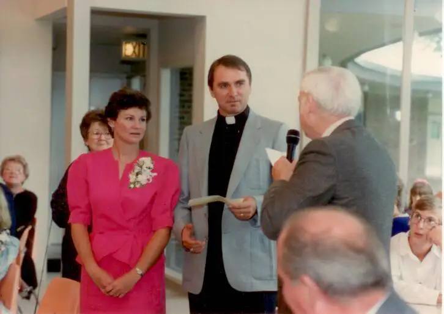

{kind=link}
WAHPETON, N.D. — When a golf-ball-size, cancerous tumor showed up in his throat 10 years ago, the Rev. Lyle Kath knew his life was about to change, though not how much.
“I really thought this was going to just be a bump in the road,” writes the former parks and recreations director turned Lutheran Church Missouri Synod minister, on his website. “Seven weeks of chemo and radiation and back in the saddle,” he’d thought.
But X-rays revealed that the cancer might not have been completely eradicated. Not wanting to risk his life, Kath chose the most invasive of several options, throat surgery, and as a result, lost part of his tongue and neck.
Due to effects of treatment, he said, he was forced to resign from his call at St. Martin’s Lutheran Church in Winona, Minn. But the complications had only begun. Kath’s doctor said his scar tissue was the worst he’d ever seen.
Eventually, struggles with eating, drinking and even breathing properly demanded Kath consider something he’d been dreading: a trachea, which meant he’d lose his voice.
{kind=link}

“I loved being a pastor and I thought, once I got a trachea put in, that would be it,” he said. “What’s been the hardest has been trying to live the words, ‘Thy will be done.’ They’re so much easier just to say.”
Normally optimistic, Kath began to feel forlorn, and struggled for a time with situational depression. “That ‘sudden’ change left me reeling emotionally, and like I was in a fog spiritually,” he said. “Thank God no fog is too thick for him because I couldn’t ‘see’ a thing.”
But eventually, he began to embrace his life and ministry once again. Promoting himself as the “Mute Minister,” the now-cancer-free Kath chooses joy as a way of life.
When I first met him in downtown Fargo, Kath was praying with a group near the Red River Women’s Clinic. In his hands, Dr. Seuss’ words, “A person’s a person no matter how small,” were scribbled in marker on a white board. A second dry-erase board helped him communicate with passers-by, often with a simple, “Hello, how are you?”
Later, he shared more about his passions in an email interview. “Our life in Christ supersedes and naturally takes on the issue of pro-life … Our respect and preservation of God’s most priceless gift is first and foremost.”
Also a sports enthusiast, Kath — or “P.K.” as some know him — especially loves baseball and more recently, racquetball. “I once told my wife, if I had a choice to eat again or play racquetball, I’d play racquetball.”
Due to the disfiguration of his appearance, however, Kath said some, especially children, find him frightening. One Halloween, he answered the door and “two little, wide-eyed trick-or-treaters” barely uttered the words “trick or treat” before accepting the candy he’d plopped into their bags and scampering away.
As they darted off, Kath heard one say, “Did you see that thing in his neck?” and the other respond, “Yeah, I think he was Frankenstein.”
“Pride has always been one of my biggest crosses,” Kath said as a follow-up. “I’m reminded of Paul (in Scriptures), saying if he was to boast ‘I will boast in the Lord.’ ”
Along with a growing humility, Kath has found helpful resources in his post-cancer days. With an iPad, voice-projecting application and Powerpoint, he can communicate to large groups, and even serves as a substitute pastor for his parish in Wahpeton when needed. “This little gift of God changed my life.”
He’s also written several books on faith and surviving cancer, and sends out a daily email called “Pearls,” containing doses of encouragement and inspiration.
Glass half-full
As for his loss of optimism, that turned out to be a temporary thing.
“God is so good. And I truly believe ministry does not just take place in the church itself. It starts in the home with your most important ministry: family,” Kath said. “It also includes the community and wherever you go as a Christian.”
Kath said his cancer journey has helped him see God’s hand “in the smallest and sometimes ‘most taken-for-granted’ things in life,” such as in the simple act of breathing.
And he’s become aware of how much God loves us, not wanting to just tag along or be summoned only when needed, but fully involved.
“His presence and love is found in everything good, and his will is only to bless us,” Kath said, even in illness. “I’m not trying to sound pious, but cancer is one of the best things that’s happened to me.”
Now, instead of relying on himself, he leans fully on the one “who is able and helps me in whatever I do. (God) doesn’t call us to be successful, as the world defines success, but faithful,” giving us what we need to carry that out.
Kath said he hopes to reflect Jesus and remind others that “love conquers all and nobody and nothing in all of creation can separate us from the love of God.”
With the support of his wife, Jody, and two grown children, Carisa and Darian, Kath continues to write, leads worship at various nursing homes and his church, and serves as pastoral adviser for the Fargo-Moorhead chapter of Lutherans for Life.
He said he hopes people understand that just because he can’t talk, that doesn’t mean he’s dumb, angry or lacking a sense of humor. “I’m just different,” he said, adding with a spark, “My wife said I’m the perfect husband because I don’t talk back.”
Online: pastorlylekath.com
[For the sake of having a repository for my newspaper columns and articles, I reprint them here, with permission, a week after their run date. The above piece ran in The Forum newspaper on August 22, 2015.]